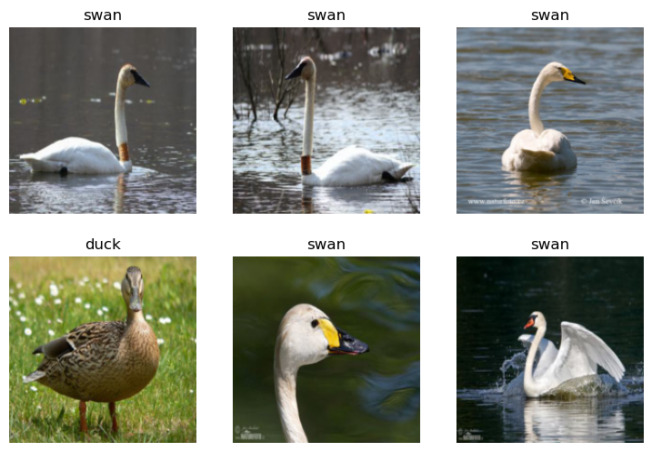

!pip install -Uqq fastai duckduckgo_searchIs it a duck or a swan?
Install dependencies
Define a function to search for images on DDG. Search for 90 images by default.
from duckduckgo_search import ddg_images
from fastcore.all import *
def search_images(term, max_images=90):
print(f"Searching for '{term}'")
return L(ddg_images(term, max_results=max_images)).itemgot('image')Lets see the an example of the URL we find using the above function
urls = search_images('duck', max_images=1)
urls[0]Searching for 'duck''http://3.bp.blogspot.com/--XA3iMvaJLY/Tw_GykPs-eI/AAAAAAAAEgU/EmFKS7Cz5xQ/s1600/Duck-04.jpg'What does this image look like? Is it actually a duck?
from fastdownload import download_url
dest = 'duck.jpg'
download_url(urls[0], dest, show_progress=False)
from fastai.vision.all import *
im = Image.open(dest)
im.to_thumb(256,256)How about a swan?
download_url(search_images('swan', max_images=1)[0], 'swan.jpg', show_progress=False)
Image.open('swan.jpg').to_thumb(256,256)Searching for 'swan'Looks like we are on the right path. So go ahead and download 90 of each. Might take a bit of time.
searches = 'duck','swan'
path = Path('duck_or_swan')
from time import sleep
for o in searches:
dest = (path/o)
dest.mkdir(exist_ok=True, parents=True)
download_images(dest, urls=search_images(f'{o} photo'))
sleep(30) # Pause between searches to avoid over-loading server
resize_images(path/o, max_size=400, dest=path/o)Searching for 'duck photo'
Searching for 'swan photo'Remove images that didn’t get downloaded properly
failed = verify_images(get_image_files(path))
failed.map(Path.unlink)
len(failed)1The easiest way to use FastAI is to use define a DataBlock. We load the data from the path.
dls = DataBlock(
blocks=(ImageBlock, CategoryBlock),
get_items=get_image_files,
splitter=RandomSplitter(valid_pct=0.2, seed=42),
get_y=parent_label,
item_tfms=[Resize(192, method='squish')]
).dataloaders(path, bs=32)
dls.show_batch(max_n=6)
Fine tune the pre-trained resnet18 model for our data.
learn = vision_learner(dls, resnet18, metrics=error_rate)
learn.fine_tune(3)/Users/bnabi/miniforge3/envs/invokeai/lib/python3.10/site-packages/torchvision/models/_utils.py:208: UserWarning: The parameter 'pretrained' is deprecated since 0.13 and will be removed in 0.15, please use 'weights' instead.
warnings.warn(
/Users/bnabi/miniforge3/envs/invokeai/lib/python3.10/site-packages/torchvision/models/_utils.py:223: UserWarning: Arguments other than a weight enum or `None` for 'weights' are deprecated since 0.13 and will be removed in 0.15. The current behavior is equivalent to passing `weights=ResNet18_Weights.IMAGENET1K_V1`. You can also use `weights=ResNet18_Weights.DEFAULT` to get the most up-to-date weights.
warnings.warn(msg)| epoch | train_loss | valid_loss | error_rate | time |
|---|---|---|---|---|
| 0 | 1.222246 | 0.440960 | 0.290323 | 00:04 |
| epoch | train_loss | valid_loss | error_rate | time |
|---|---|---|---|---|
| 0 | 0.402388 | 0.356703 | 0.193548 | 00:05 |
| 1 | 0.249177 | 0.256310 | 0.064516 | 00:05 |
| 2 | 0.192781 | 0.251938 | 0.032258 | 00:05 |
Testing the images
bird,_,probs = learn.predict(PILImage.create('duck.jpg'))
Image.open('duck.jpg').to_thumb(256,256)
print(f"This is a: {bird}.")
print(f"Probability it's a duck: {probs[0]:.4f}")
print(f"Probability it's a swan: {probs[1]:.4f}")This is a: duck.
Probability it's a duck: 0.9990
Probability it's a swan: 0.0010bird,_,probs = learn.predict(PILImage.create('swan.jpg'))
Image.open('duck.jpg').to_thumb(256,256)
print(f"This is a: {bird}.")
print(f"Probability it's a duck: {probs[0]:.4f}")
print(f"Probability it's a swan: {probs[1]:.4f}")This is a: swan.
Probability it's a duck: 0.0006
Probability it's a swan: 0.9994